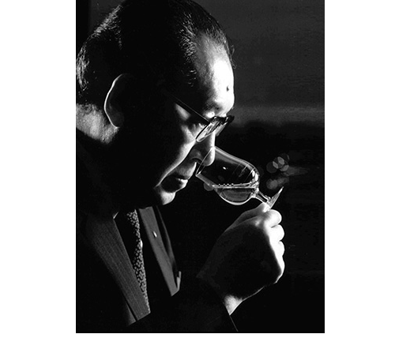
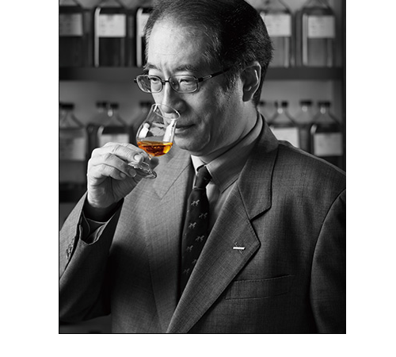
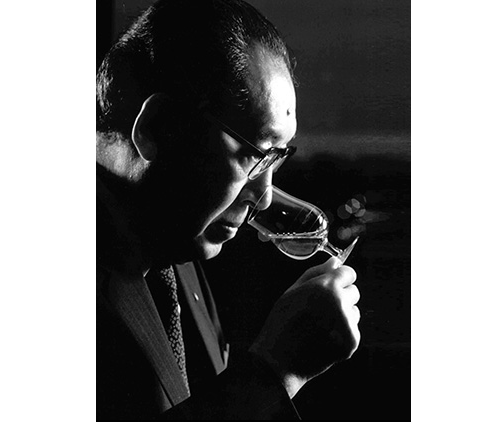
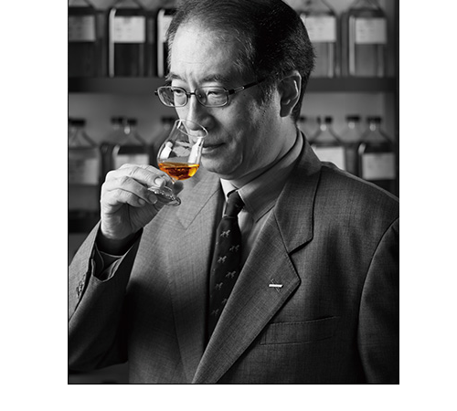

Art of Blending
The complex and delicate aroma of Hibiki would not be possible without the skill of the blender. The Master Blender, who ultimately determines the flavor of the whiskey, has been in the family of Shinjiro for generations, preserving the quality and complexity of the whiskey's aroma. The current Master Blender is Shingo Torii, grandson of Shinjiro Torii. The chief blender oversees the whisky production under the master blender. Currently, Shinji Fukuyo, the fourth generation, is in charge of this role.
The recipe for blending cannot be written down in numbers or letters. The blender selects the "perfect" sake from each barrel based on its unique character and peak of maturity. The blender then combines these different types of sake and combines them into a single barrel, a skill that is truly the art of the artisan. It requires the delicate sensibilities and meticulous skills unique to the Japanese.
 


